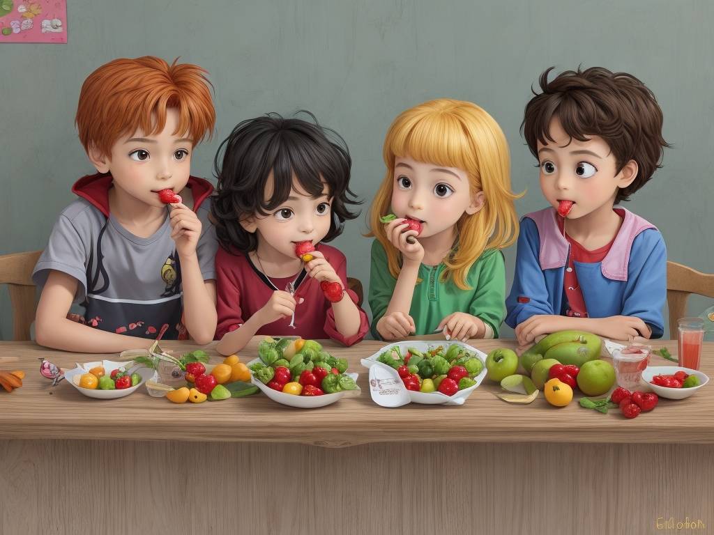

في يوم من الأيام، في مدرسة ابتدائية صغيرة ودافئة تقع بين التلال الخضراء والطيور التغريد، كان هناك فصل مليء بالأطفال النشطاء. من بينهم كان تيمي، الصبي الذي يملك عيوناً لامعة ويحب الضحك واللعب مع أصدقائه.


في صباح مشمس واحد، وعندما دقت الجرس، لاحظ أصدقاء تيمي شيئًا غير معتاد. لم يكن تيمي هناك! نظروا حول الفصل بذهول وقلق. "أين تيمي؟" همسوا لبعضهم البعض.
مرت الأيام، ولكن تيمي لم يظهر بعد. فقد أشتاق أصدقاؤه لضحكاته البهجة وللمسات العالية الودية التي كان يمنحها. لم يتمكنوا من التركيز على دروسهم، يتساءلون أين يمكن أن يكون.

وأخيرًا، بعد ثلاثة أيام طويلة، عاد تيمي إلى المدرسة. احتشد أصدقاؤه حوله، يطلقون عليه أسئلة من كل حدب وصوب. "أين كنت، تيمي؟ أشتقنا لك!"
بدت تيمي شاحبة قليلاً وهو يشرح، "كنت مريضًا. كانت بطني تؤلمني كثيرًا، لذا كان عليّ البقاء في المنزل."

سقطت وجوه أصدقائه. لم يعجبهم سماع أن تيمي كان مريضًا. "لكن لماذا كنت مريضًا؟" سألوا بقلق.
أهز كتف تيمي بحزن. "أعتقد أنه بسبب تناولي الكثير من الوجبات الخفيفة التي لم تكن جيدة بالنسبة لي."

سمعت معلمتهم، السيدة باركر، حديثهم.
جمعت السيدة باركر الأطفال حولها بابتسامة دافئة. "صفي، دعوني أشارككم شيئًا مهمًا"، قالت بلطف.
"ترى، أجسامنا مثل القلاع القوية، يحرسها جنود شجعان يُسمى الأعضاء. ولكن في بعض الأحيان، يحاول المهاجمون المخادعون التسلل إلى قلاعنا وتسبب المشاكل. هؤلاء المهاجمون هم المواد الكيميائية الموجودة في الوجبات الخفيفة التجارية - مثل الألوان الاصطناعية والمواد الحافظة والإضافات الأخرى."
استمع الأطفال بانتباه، عيونهم واسعة من الفضول.
"هذه المواد الكيميائية يمكن أن تجعل أعضائنا تشعر بالضعف والتعب"، استمرت السيدة باركر. "يمكنها حتى أن تجعلنا مرضى!"
وكما أوضحت السيدة باركر أهمية اختيار الوجبات الخفيفة الصحية، انتشرت نفخة من عدم اليقين بين الأطفال. "ولكن ماذا سنأكل خلال فترة الاستراحة إذا كانت الوجبات الخفيفة التجارية سيئة؟" صرخ أحد الأطفال، معربًا عن القلق الذي ظل عالقًا في أذهان الكثيرين.
ابتسمت السيدة باركر متفهمة، وعيناها تلمعان بالدفء. "أتفهم قلقكم، طلابي الأعزاء. لكن لا تخافوا، لأن الطبيعة زودتنا بمجموعة مبهجة من الوجبات الخفيفة التي ليست لذيذة فحسب، بل مفيدة أيضًا بشكل لا يصدق بالنسبة لنا."
مددت يدها إلى حقيبتها وأخرجت مجموعة متنوعة ملونة من الفواكه: التفاح والموز والعنب والبرتقال. "ها،" صرخت وهي تحملهم مثل الكنوز الثمينة. "هؤلاء هم أبطال وقت الوجبات الخفيفة لدينا! قد لا يأتون في عبوات مبهرجة أو ألوان زاهية، ولكن جودتهم تتألق من الداخل."
بعض الأطفال تجعدوا أنوفهم بشكل متشكك. "لكنها لا تبدو لذيذة مثل الوجبات الخفيفة التي نتناولها عادة"، قال أحدهم.
ضحكت السيدة باركر بهدوء، وكانت عيناها تتلألأ بالأذى. "آه، لكن المظاهر قد تكون خادعة، يا أصدقائي الشباب! دعوني أريكم السحر الموجود في الداخل."
وبحركة سريعة، قشرت برتقالة وقدمت شرائحها للأطفال. شجعت قائلة: "أغمض عينيك وخذ قضمة".
وعلى مضض، اتبع الأطفال تعليماتها. وبينما انفجرت حلاوة البرتقال اللذيذة على براعم التذوق لديهم، أضاءت وجوههم بالمفاجأة والبهجة. "واو، إنه جيد جدًا!" صاح أحدهم، وعيناه واسعة من العجب.
ابتسمت السيدة باركر منتصرة. "هل ترى؟ قد لا تحتوي الفواكه على أغلفة فاخرة، ولكنها مليئة بالخيرات الطبيعية والنكهات التي ستجعل ذوقك يرقص بفرح."
الفواكه تشبه الأبطال الخارقين لأجسامنا! إنها ليست حلوة ولذيذة فحسب، بل إنها مليئة أيضًا بجنود صغار يقاتلون الغزاة ويمنحون أعضائنا الطاقة."
شهق الأطفال في دهشة.
قالت السيدة باركر وعيناها تتلألأ بالإثارة: "تخيل كل قضمة من الفاكهة كدرع يحمي قلعتك". "عندما نأكل الفاكهة، فإننا نمنح أعضائنا القوة التي تحتاجها للبقاء بصحة جيدة وقوية. فهي تساعد أجسامنا على العمل بشكل أفضل، وتبقينا في مأمن من الجراثيم والفيروسات."

ببطء ولكن بثبات، تلاشى تردد الأطفال عندما أخذوا عينات من الفواكه المختلفة التي أحضرتها السيدة باركر. ومع كل قضمة، اكتشفوا طعامًا مفضلاً جديدًا، متعجبين من الألوان النابضة بالحياة والأذواق اللذيذة التي توفرها الطبيعة.
أعلنت السيدة باركر بصوت مليئ بالاقتناع: "من الآن فصاعدا، دعونا نجعل الفاكهة هي وجباتنا الخفيفة المفضلة". "لن يحافظوا على صحتنا وأقوياءنا فحسب، بل سيجلبون لنا أيضًا موجة من الفرح في أوقات استراحتنا."
وبهذا، أومأ الأطفال بالموافقة، وكانت قلوبهم مليئة بالإثارة الجديدة لمغامراتهم المثمرة المقبلة.

لقد انتهيت من القصة.
حان الوقت للعبة الاختبار!